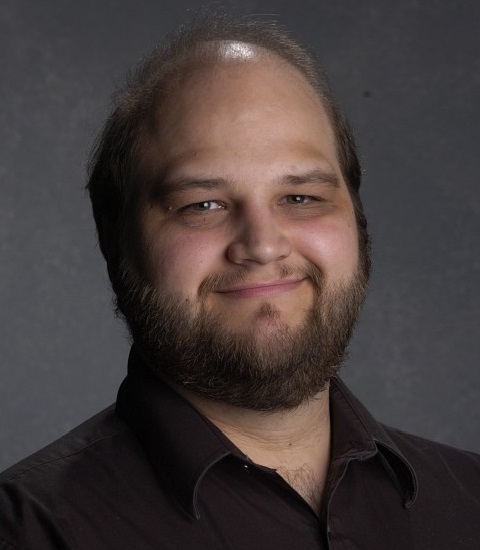

About Me
At the tender age of five, I was expatriated from my native state of Oregon and forced to grow up on the mean streets of Carmichael, where I have lived ever since.
In that time I have literally and figuratively worn a wide assortment of hats. In high school, I began a career in performance, studying acting, singing, and the saxophone. Since then, I have gone on to join Actor's Equity, the national union for professional stage actors, and have performed at over twenty theaters in the Sacramento and Bay Area regions.
Outside of live performance, I have been a student of mathematics and English such that I have taken on students of my own as time permitted. I have tutored both privately and as the lead of tutoring programs at both the San Juan Unified School District and the Yocha Dehe Wintun Nation. My knowledge of English structure has allowed me to also function as a copy writer and editor at the American River Current newspaper and a variety of individual projects.
In between and during all the above, I accumulated over a decade of customer service experience and currently serve as the Customer Service Manager at Tech 2U, the leading computer repair company in Sacramento.
Having always been interested in programming and other logical systems, I have now begun learning web development through the UC Davis Extension, which is how I learned to create this very website! Thanks for coming!